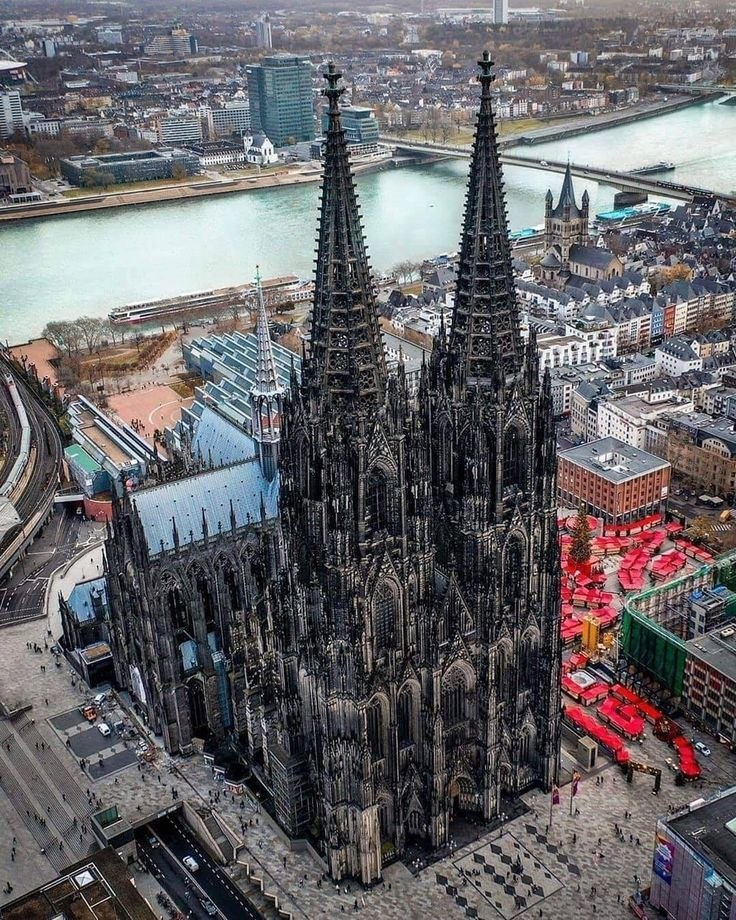
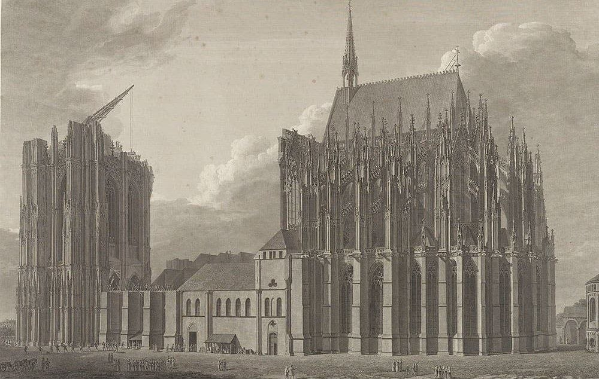
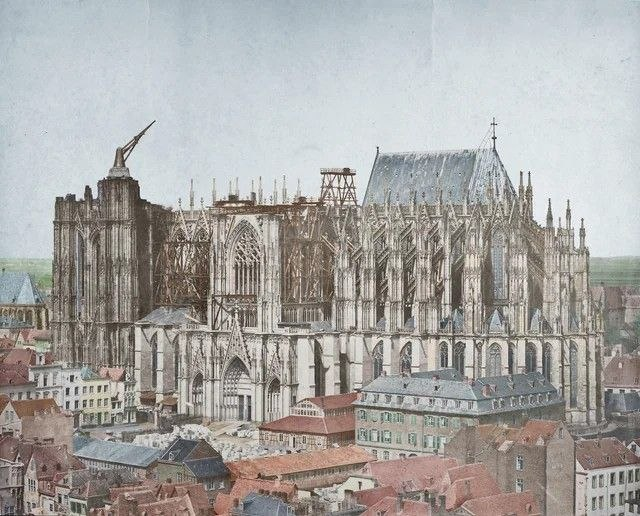
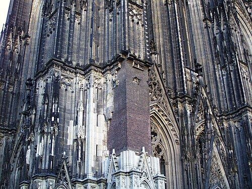

Кёльнский собор (Kölner Dom) — это абсолютный шедевр готической архитектуры и один из самых узнаваемых храмов мира, внесенный в список Всемирного наследия ЮНЕСКО.
Возвышающийся в самом сердце Кёльна, он поражает воображение своими размерами: его башни достигают высоты более 157 метров, делая собор долгое время самым высоким зданием на планете. Главной христианской святыней храма является золотая рака Трёх Волхвов (Царей), в которой хранятся мощи библейских мудрецов, пришедших с дарами к младенцу Христу.
Информация
- Официальное название: Kölner Dom
- Год закладки: 1248 год
- Период строительства: 1248–1880 гг. (632 года)
- Высота башен: 157,38 метров
- Статус: Кафедральный храм / Объект ЮНЕСКО
Главная святыня
Изначально собор возводился как монументальный реликварий для хранения бесценной христианской святыни — мощей Трех Царей, которые архиепископ Рейнальд фон Дассель привез в Кёльн в 1164 году. Новый храм должен был стать архитектурным воплощением Небесного Иерусалима на земле.
История и хронология строительства
Начало стройки
Архиепископ Конрад фон Гохштаден заложил первый камень в фундамент грандиозного собора, который должен был затмить все европейские храмы своей роскошью и вместить паломников со всей Европы. Руководить проектом начал легендарный мастер Герхард.
Многолетний перерыв
К 1560 году темпы строительства резко замедлились из-за нехватки финансирования и изменения религиозно-политической обстановки в Европе. Стройка остановилась почти на триста лет. Недостроенный собор с огромным строительным краном на вершине башни стал привычной деталью пейзажа Кёльна.
Возобновление работ
Интерес к готике вспыхнул с новой силой в эпоху романтизма. В 1842 году король Пруссии Фридрих Вильгельм IV выделил средства на продолжение работ. По найденным оригинальным средневековым чертежам мастера Герхарда достроили нефы и вознесли ввысь знаменитые башни.
Официальное открытие
В присутствии кайзера (императора) Вильгельма I состоялось торжественное открытие полностью завершенного собора. Строительство заняло ровно 632 года, 2 месяца и 21 день с перерывом включительно.


Испытание войной: Кёльнский собор в XX веке
Во время Первой и Второй мировых войн Кёльнский собор пережил тяжелейшие испытания. Хотя сам город Кёльн был практически полностью уничтожен в ходе сотен воздушных налетов союзников, храм выстоял.
«Кёльнская пломба»
В ноябре 1943 года мощная фугасная бомба выбила огромный кусок кладки у основания северной башни. Чтобы предотвратить обрушение, в 1944 году дыру срочно заложили обычным красным кирпичом. Эта «заплатка» десятилетиями напоминала о войне, пока ее не облицевали камнем в начале XXI века.
За годы Второй мировой войны в собор попало около 70 зажигательных и 14 фугасных авиабомб. На крыше собора круглосуточно дежурили добровольцы и пожарные. Их задачей было моментально сбрасывать вниз зажигательные бомбы, не давая им прожечь кровлю и вызвать масштабный пожар.
Так же существует распространенный миф, будто пилоты союзников специально щадили собор и использовали его массивные башни как главный ориентир для навигации. Историки опровергают это: никаких приказов щадить храм не существовало, а собор выжил благодаря невероятной прочности своего каменного каркаса.
Сооружение выстояло, однако ударные волны от взрывов выбили почти все витражи и мозаики.
Спасти удалось лишь самую ценную часть средневековых стекол, которые демонтировали
и спрятали в хранилищах еще до начала массированных бомбежек.

Легенда об архитекторе и дьяволе
Предание гласит, что мастер Герхард от отчаяния заключил сделку с дьяволом ради идеального чертежа. Сделка сорвалась из-за хитрости жены зодчего, и разъяренный нечистый проклял храм, пообещав конец света в день окончания стройки.
Это классический фольклорный сюжет, и собор уже давно достроен. В реальности самого мастера никто не проклинал — он сорвался с лесов во время строительства и погиб на месте.
Трахит и вечный ремонт
Собор построен из трахита — пористого вулканического камня. Под воздействием осадков, выхлопных газов и смога он активно разрушается и темнеет. Из-за непрерывной реставрации и заменяемых вручную блоков собор практически всегда окружен строительными лесами, отчего в шутку говорят: «Работа над собором никогда не закончится».
Колокол-гигант «Петер» (Decke Pitter)
В башне собора висит самый большой действующий свободно раскачивающийся колокол в мире. Он весит 24 тонны и был отлит в 1923 году из метала переплавленных французских пушек. Раскачать его — сложнейшая инженерная задача, поэтому «Петер» звонит крайне редко, только по большим праздникам.
Наполеоновские конюшни
В период французской оккупации в конце XVIII века солдаты Наполеона нашли храму циничное применение — внутри величественного готического собора обустроили склад сена и казарму для армейских лошадей.
Асимметрия башен
Измерения точными приборами показывают, что северная башня собора выше южной ровно на 4 сантиметра. Человеческий глаз этого не замечает, но архитектурная погрешность вызывает улыбку у инженеров.
Массивный фундамент
Масса подземного фундамента Кёльнского собора практически равна весу всей его огромной надземной части. Основания возводились с колоссальным запасом прочности.
Титул рекордсмена
После завершения строительства в 1880 году собор на протяжении четырех лет (до 1884 года) официально оставался самым высоким зданием в мире, пока его не превзошел Монумент Вашингтона в США.
Современное положение локации
Сегодня Кёльнский собор — это действующий кафедральный храм, центр притяжения миллионов туристов и паломников со всего мира. Он находится под постоянным надзором специализированной мастерской (Dombauhütte), где потомственные каменщики, архитекторы и реставраторы ежедневно следят за состоянием здания.
Собор по-прежнему возвышается над Рейном, олицетворяя стойкость, духовную силу и триумф человеческого мастерства.